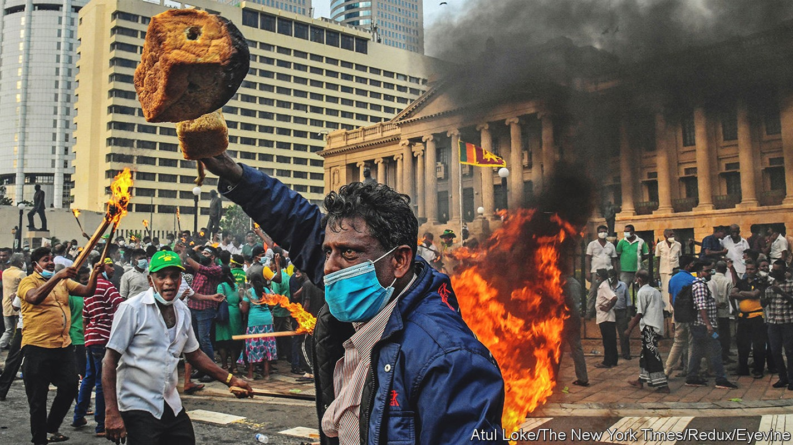
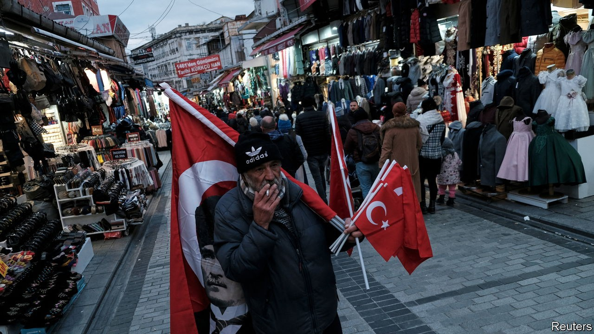
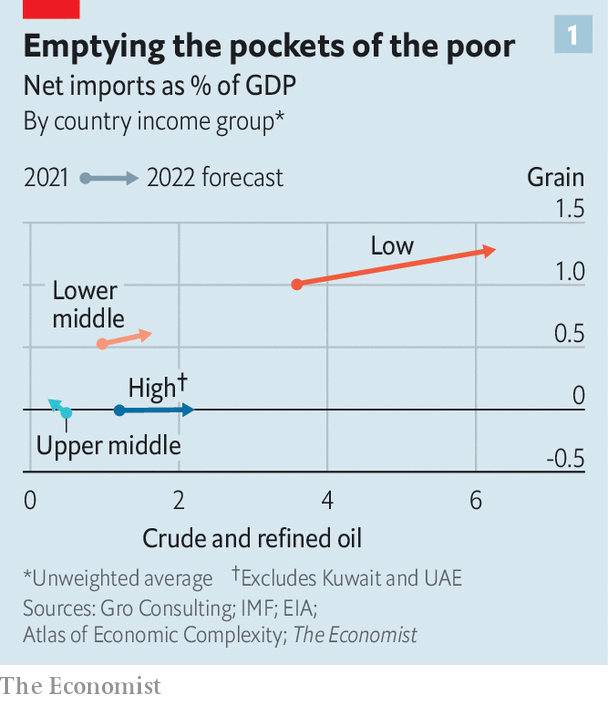
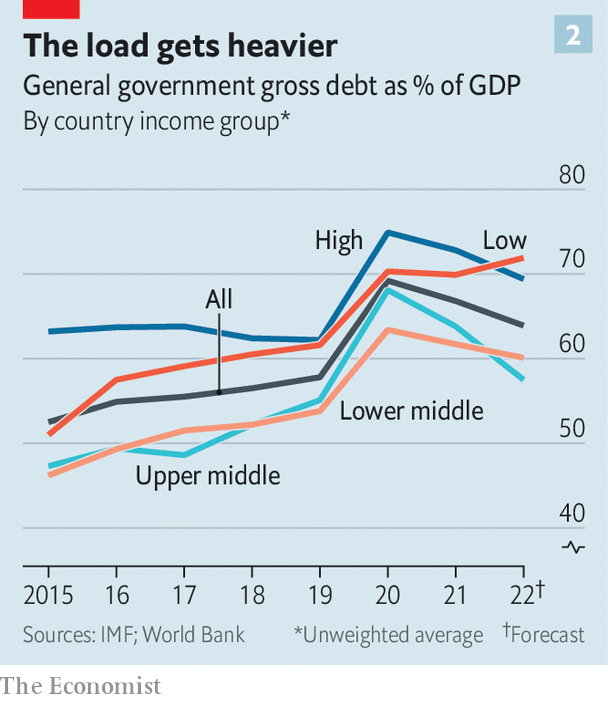
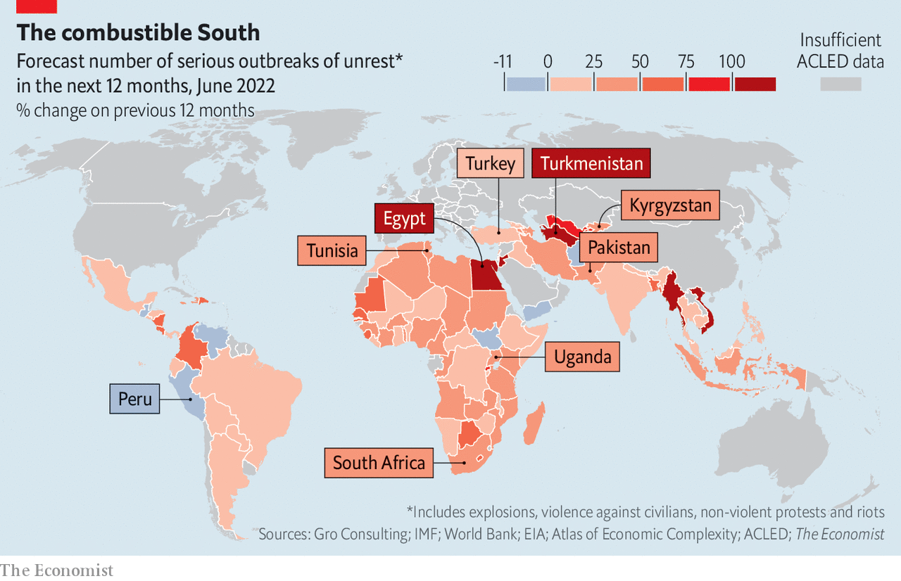

Costly food and energy are fostering global unrest
Many governments are too indebted to cushion the blow to living standards

“Money no longer had any value in Istanbul,” laments the narrator of “My Name is Red”, a novel by Orhan Pamuk set in the 16th century. “[B]akeries that once sold large…loaves of bread for one silver coin now baked loaves half the size for the same price.” The royal mint was slyly reducing the amount of silver in each coin. When the Janissaries (an elite military force) found that their wages had been debased, “they rioted, besieging Our Sultan’s palace as if it were an enemy fortress.”
Listen to this story.Enjoy more audio and podcasts on iOS or Android.
Listen to this story
Save time by listening to our audio articles as you multitask
Galloping inflation afflicts Turkey again today. Officially it is 73%, but everyone suspects it is higher. Mr Pamuk, a Nobel laureate for literature, says he has “never seen such a dramatic rise in prices”. He makes no predictions about what the political consequences might be. To criticise Turkey’s modern sultan, Recep Tayyip Erdogan, would be risky. But from his book-strewn flat overlooking the Bosporus, Mr Pamuk observes that his compatriots are reacting with “shock, surprise and anger”.

A visit to a street market suggests the novelist is right. A vine-leaf seller gripes that he has had to treble his prices since last year. “People used to buy 5kg at a time and put them away for winter. Now they can only afford 300g.” A grandfather complains that his pension has been so eroded that he has not eaten meat this year.
“The government is responsible, who else?” he says. He voted for Mr Erdogan’s party at the most recent election, in 2019, but will not do so again. “The solution is to change the government,” says the vine-leaf seller. “I want to leave the country,” says his younger brother. “I’ll clean toilets in Europe if I have to.”
All around the world, inflation is crushing living standards, stoking fury and fostering turmoil. Vladimir Putin’s invasion of Ukraine has sent prices of food and fuel soaring. Many governments would like to cushion the blow. But, having borrowed heavily during the pandemic and with interest rates rising, many are unable to do so. All this is aggravating pre-existing tensions in many countries and making unrest more likely, says Steve Killelea of the Institute for Economics and Peace (iep), an Australian think-tank.
The strongest predictor of future instability is past instability, finds a forthcoming paper by Sandile Hlatshwayo and Chris Redl of the imf. Historically, the probability that a country will experience severe social unrest in a given month is only 1%, but this quadruples if it has suffered it within the previous six months and doubles if a neighbouring country has experienced it, they calculate. Protesters are more likely to surge onto the streets if they think others will join them.
This is bad news, since unrest has been building for years. The iep calculates that 84 countries have become less peaceful since 2008; only 77 have improved. Its measure of violent protests is up by 50% over the same period. Using a different method—counting mentions in the media of words associated with unrest across 130 countries—the imf estimated in May that social turmoil was near its highest level since the pandemic began.

The Economist has built a statistical model to assess the relationship between food- and fuel-price inflation and unrest. We used data from acled, a global research project, on “unrest events” (ie, mass protests, political violence and riots) since 1997. We found that rises in food and fuel prices were a strong portent of political instability, even when controlling for demography and changes in gdp.

We also found cause for alarm about the coming months. Expenditure on imports of food and fuel is set to increase, especially in poor countries (see chart 1). Poor countries’ debts have also risen (see chart 2). The average low-income country has a public-debt-to-gdp ratio of 69.9%, estimates the imf. This, too, is set to increase, and to overtake the (unweighted) average for rich countries this year. Since poor countries typically have to pay much higher interest rates, many of their debts look unsustainable. The imf says 41 countries, home to 7% of the world’s population, are in or at high risk of “debt distress”. Some, such as Laos, are on the brink of default. Our model suggests that many countries will see a doubling of the number of “unrest events” in the coming year (see map).

Places that were precarious before may be tipped over the edge. In Turkey, for example, the disruption of food and fuel imports from Ukraine and Russia adds to the damage already being caused by barmy monetary policy. Mr Erdogan believes that high interest rates cause inflation, rather than curbing it. So he has ordered rates cut even as prices have raged out of control.
To defend the Turkish lira, Mr Erdogan has since the end of 2021 urged people to put their money into special depreciation-proof accounts. The state promises to make up the difference if these deposits lose value against the dollar, as they have been doing. The lira has already fallen by almost 25% this year. No wonder that over 960bn lira ($55bn, or 7% of gdp) has been stashed in the accounts in six months, creating a vast liability for the government.
“It’s the dynamite under the system,” says Garo Paylan, an opposition mp. It will probably explode before the next election, which is a year away. Mr Erdogan is expected to lose unless he does something drastic, so he might do something drastic. He could start a new war in Syria against the pkk (a Kurdish group the government calls terrorists) or ban his strongest opponents from politics, speculates Behlul Ozkan of Marmara University. In short, the economic crisis could lead Turkey to eject an erratic strongman who has ruled for nearly two decades—or the strongman could throttle what is left of Turkish democracy. Tranquillity seems the least likely scenario.
In country after country, the global economic storm has exacerbated underlying troubles. Take Pakistan, where squeezed living standards help explain why in April parliament ousted the prime minister, Imran Khan, with a nod from the army. He has since led mass rallies to get his job back. In India riots erupted over a plan to reduce the number of jobs for life in the army. (When times are hard, people particularly crave job security.)
Sri Lanka gives a taste of how quickly things can spiral out of control. President Gotabaya Rajapaksa banned agrochemicals last year and told farmers to go organic instead. Harvests plunged. Six months later he lifted the ban but, by then, thanks to other daft policies, there was too little hard currency to import enough chemical fertiliser. The next harvest is predicted to be miserable. Sri Lanka needs food and fuel, but cannot afford to import them.
On May 9th protesters clashed with a pro-government rally. They pushed buses into lakes or set them on fire. They attacked government supporters with poles; your correspondent also saw some wielding hockey sticks. They burned the homes of politicians and smashed up a museum dedicated to the Rajapaksa family. Troops dispersed protesters who burst into the prime minister’s residence. The president tried to calm the crowds by pushing out the prime minister (his brother).
But Sri Lankans are still furious. Shop shelves are bare, even for basics, and people queue for hours for petrol. Schools and government offices are temporarily closed. The government has defaulted on its debts. imf officials arrived in Colombo, the capital, on June 20th to discuss a bail-out.
Foreseeing red
No one can be sure which country or region will explode next. Mr Killelea frets about the Sahel, which has seen five coups in the past two years. Others point to Kazakhstan, where the government called in Russian troops to help suppress civil unrest in January, or Kyrgyzstan, which relies on wheat and remittances from Russia and has ousted three presidents since 2005.
One country with nearly all the harbingers of havoc is Tunisia. It has a history of unrest. Almost 12 years ago a Tunisian fruit-seller, Muhammad Bouazizi, set fire to himself after police kept shaking him down. His death set off the Arab spring, a wave of protests that swept the Middle East and toppled four presidents. Tunisia’s democratic revolution initially went well. But last year the president, Kais Saied, assumed autocratic powers. Falling living standards have turned the country into a powder keg once more.
Half the population is under 30, and a third of young men are unemployed. In slums around Tunis, the capital, they loiter on street corners, smoking and bellyaching. “Young people here have nothing to lose. They’ll join a riot just for a chance to steal phones and rob shops,” says Muhammad, a 23-year-old selling pot in the street.
“I’m always angry, from the beginning of the day to the end,” says Meher el Horchem, who works in a café in Goubellat, a small town. Business is down 70-80% in recent months, he reckons: “No one can afford to go out.” He waves a 20-dinar ($6.40) note in the air. It is his day’s wages. “You walk into a shop with this and you come out with nothing,” he complains.
He is in his 30s and lives with his parents. “Of course I want to be married. Everyone does,” he says. But he cannot afford to on his inflation-sapped wages. “I can’t have a life,” he fumes, adding: “All the youth are angry at the system. I’m hoping to God it won’t lead to a civil war.”
So far, it has not. But a general strike on June 16th stopped buses and trains. The government is trying to make a deal with the imf, but a big union objects to its conditions, which include cutting the public-sector wage bill. President Saied is trying to buttress his own power: on July 25th Tunisians will vote on a new constitution, the text of which he has not yet shown them.
Ordinary Tunisians yearn for calories, not constitutional reform. But policies intended to satisfy their hunger have perverse consequences. Like many countries, Tunisia fixes the price of a staple food (in this case, bread). Bread subsidies cost more as wheat prices rise; this is one reason why the government needs an imf bail-out.
Farmers, meanwhile, must sell their grain to the state for a low, fixed price. This discourages production. In a field near Goubellat a group of labourers share lunch. “The earth in this country is good,” says Neji Maroui, their manager. There is plenty of spare land. If they could earn a market rate for their wheat, they would plant more of it, he says. But they receive less than a fifth of the world price, so they don’t.
Inflation stimulates corruption, argues Youssef Cherif of the Columbia Global Centre in Tunis. In poor countries, each civil servant typically supports a large extended family. Grocery bills have gone up. Wages have not kept pace. “That creates an incentive to demand more bribes.”
That, in turn, makes unrest more likely. As graft intensifies, the chances of another frustrated victim like Muhammad Bouazizi staging a spectacular protest somewhere must surely increase. In Goubellat Rafika Trabelsi boils with rage as she slices potatoes. She wanted to expand her roadside kiosk and sell a wider range of drinks and snacks. But local officials refused her permission and bulldozed her tiny extension. Other people got permits because they paid bribes, she says.
Though Mr Putin is responsible for a big chunk of global inflation, people tend to blame their own governments. In Peru Pedro Castillo won power last year with the slogan “no more poor people in a rich country”. Covid-19 made that harder—it has been deadlier in Peru than almost any other country, according to The Economist’s excess-deaths tracker. And just as the economy was recovering, Mr Putin’s war choked off its supply of fertiliser. Peru had relied on Russia for 70% of its imports of urea, the most commonly used sort. Now farmers struggle to get hold of the stuff, and they are livid.
In April they blocked roads to protest against inflation. Toll booths were burned; shops were looted. Mr Castillo panicked and tried to impose a fresh pandemic-style lockdown on Lima, the capital. Critics howled “autocrat”. He relented.
The president’s approval rating is now around 20%. “We thought he was like us,” says Gricelda Huaman, a mother of three in a shantytown outside Lima, but, “he’s forgotten us.” She often skips meals so her children have more. She sometimes can’t afford pills for lupus, an autoimmune disease. Without them, she cannot walk.
Unless Peru secures more fertiliser, the next harvest could be drastically reduced, says Eduardo Zegarra of grade, a local think-tank. Mr Castillo has been distributing guano, a traditional fertiliser that Peru once produced in large quantities. He recently told farmers that “only the lazy” would go hungry. They are unimpressed. “If we don’t see concrete actions in favour of farmers soon, he’ll have us on the streets,” says Arnulfo Adrianzén, who grows rice. Peru has had five presidents in the past five years. It may not be long before another puts on the increasingly uncomfortable sash of office.
Some regimes will keep a lid on unrest through force. No one expects protests to get out of hand in China, for example. In Turkmenistan, where food shortages have long been rife because of a mismanaged economy, anyone who buys more than their allocation of bread faces 15 days in jail. Egyptians are wary of speaking up. The last mass protests, in 2013, ended when the regime massacred perhaps 1,000 people.
In Uganda, President Yoweri Museveni has told his people to eat cassava if there is no bread. An opposition leader has urged them to take to the streets. Kizza Besigye, a former presidential candidate, led protests during the previous big inflationary spike, in 2011. This time the state is taking no chances. Dr Besigye has been locked up.
Protests in Uganda are unlikely to succeed. The state, like Egypt’s, has no compunction about shooting demonstrators. Also, many Ugandans live hand-to-mouth, which makes protest difficult to sustain: if people don’t work, they don’t eat. Still, frustration is rising. Ugandans spend 43% of their income on food, so price rises hurt.
Authoritarian regimes such as Uganda’s face a dilemma. To crush dissent they must divert ever more resources to the security forces and patronage, reducing their capacity to respond to economic shocks. Dr Besigye says “the repressive apparatus” in Uganda is stronger than ever. But by squandering so much money on the army, he adds, Mr Museveni has “intensified the conditions for discontent”.
Uproar to downturn
Global unrest could hobble growth. Investors get skittish when mobs burn down factories or overthrow governments. A working paper by Metodij Hadzi-Vaskov and Luca Ricci of the imf and Samuel Pienknagura of the World Bank finds that big outbreaks of unrest are on average followed by a percentage-point reduction in gdp, relative to the previous baseline, a year and a half later. This could in theory be because, say, a previous policy of fiscal austerity led both to popular anger and to lower growth. But the authors find that the link holds true regardless of whether the unrest is preceded by fiscal austerity or low growth. They conclude that unrest does indeed hurt economies.
They also find that unrest motivated by socioeconomic factors (such as inflation) is associated with more severe contractions than unrest sparked by political factors (such as a disputed ballot). When the unrest has both political and socioeconomic motivations, the damage to gdp is worst of all. A good example was the rioting that rocked South Africa in 2021, when covid-19 was causing economic hardship and a rogue ex-president was urging his supporters to protest against his being put on trial for corruption. In the quarter when the looting occurred, gdp shrank by 1.5%.
A final and intriguing finding is that although unrest typically causes stockmarkets to fall, this effect has historically been negligible in countries with more open and democratic institutions. The implication is that societies cope better with turmoil when they have good institutions and the rule of law.
The thing protesters around the world so often demand—cleaner, better government—is exactly what their countries need. But it takes time, and stability, to build. The short term will be turbulent. ■